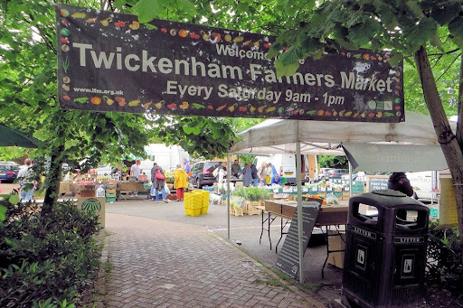
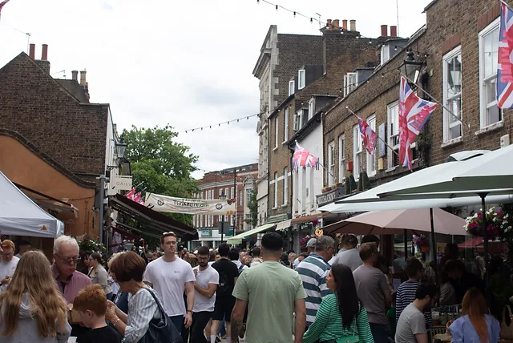

Welcome to Twickenham!
A vibrant town that perfectly complements your experience at St Mary’s University! Known for its beautiful riverside views and rich history, Twickenham offers a unique blend of culture, leisure, and community. Here’s what you can look forward to during your visit:
Local Attractions
- Twickenham Stadium: As the home of English rugby, it’s a must-visit for sports fans. Take a guided tour, explore the World Rugby Museum, and soak in the exciting atmosphere on match days.
- The Thames River: Enjoy a leisurely stroll along the Thames Path, where you can take in scenic views, relax by the riverside, or even embark on a boat trip. The riverside is perfect for picnics or simply unwinding.
-
Richmond Park: Just a short distance away, this royal park is known for its deer population and beautiful walking paths. It’s an excellent spot for outdoor activities, including cycling, jogging, and picnicking.

Dining and Shopping
Local Restaurants and Cafés: Twickenham boasts a variety of eateries, from traditional pubs to contemporary restaurants and cozy cafés. Whether you're in the mood for international cuisine or classic British fare, you'll find something to satisfy your cravings.
Independent Shops: Explore the charming high street filled with independent shops, boutiques, and markets. Discover unique gifts, fashion, and artisanal products that reflect the local community's creativity.
Cultural Events
- Local Markets: Experience the vibrant community spirit at local markets, offering fresh produce, handmade goods, and artisan products. Check out the Twickenham Farmers' Market on Saturdays for a taste of local flavors. 
-
Art and Theatre: Twickenham has a thriving arts scene with various galleries and theatres showcasing local talent. Look out for performances, exhibitions, and events happening during your visit.

Community Spirit
- Friendly Locals: Twickenham is known for its welcoming atmosphere and friendly residents. Engage with the local community, and you’ll find many people eager to share their love for the area. 
- Student Life: As a student at St Mary’s University, you’ll have the opportunity to immerse yourself in Twickenham's vibrant student community. Participate in local events and activities that connect you with fellow students and residents.
Getting Around
- Public Transport: Twickenham is well-connected to central London via train and bus services, making it easy to explore the wider area. The local transport network ensures that you can easily travel to and from the university and the town.
- Walking and Cycling: The town is pedestrian-friendly, with many attractions within walking distance. Cycling is also a popular way to explore Twickenham and its surroundings.
We hope you take the time to explore Twickenham during your visit to St Mary’s University! The town offers a rich cultural experience that complements your academic journey, providing a fantastic backdrop for your studies and social life. If you have any questions or need recommendations, feel free to ask our student ambassadors during the Open Day. Enjoy your time in Twickenham!